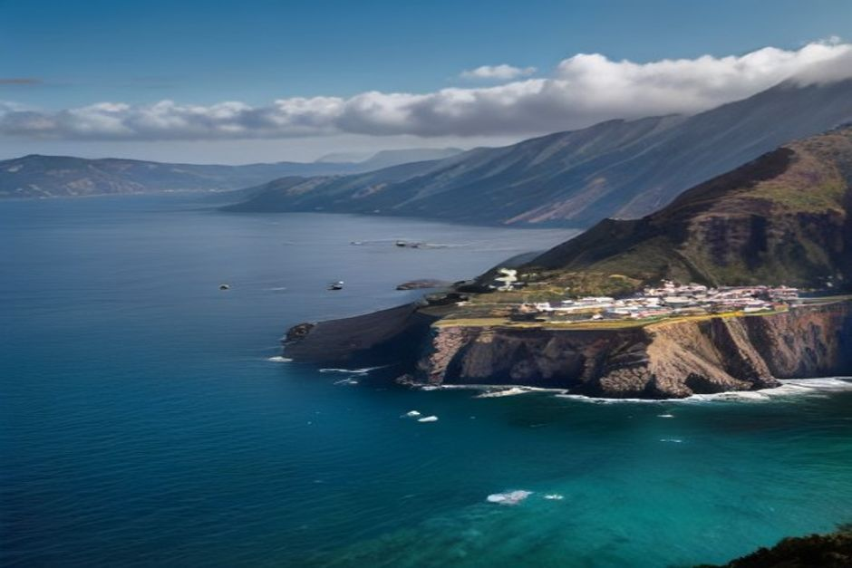
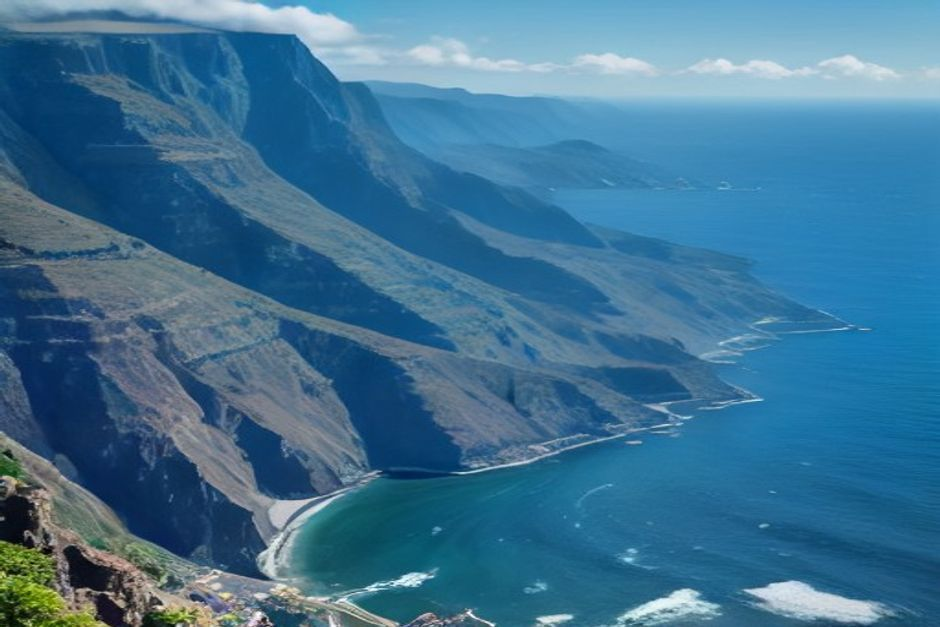

Cada semana alguien nos pregunta si las imágenes de dron que se ven en nuestro Instagram son un extra de pago. No lo son — aquí tienes exactamente lo que se incluye en un paseo en barco privado en Madeira, lo que no, y cómo asegurarte de volver a casa con unas imágenes que merezcan la pena.
¿Un paseo en barco en Madeira incluye realmente vídeo con dron?
Sí, en un paseo con Chifbay va de serie, no es un extra. El dron sobrevuela el barco en Cabo Girão tanto en el Day Trip como en el Sunset Trip, y las imágenes se envían después sin coste adicional. Esto no es así en toda la isla — algunos operadores cobran aparte por las imágenes aéreas, o directamente no las ofrecen — así que si el vídeo te importa, conviene preguntarlo directamente a cualquier operador antes de reservar en lugar de dar por hecho que está incluido.

¿Dónde vuela realmente el dron durante el paseo?
Vuela en Cabo Girão, el acantilado de basalto de 580 metros que es uno de los más altos de Europa junto al mar. En el Day Trip, el barco se mantiene al ralentí bajo el acantilado a media mañana o a media tarde, mientras se sirven bebidas y comida en cubierta y el dron gana altura; en el Sunset Trip, la misma toma ocurre cuando la luz se vuelve ámbar, unos 45 minutos después de la salida de las 18:30. Es el único momento del paseo pensado para conseguir una imagen realmente espectacular — la escala del acantilado frente a un barco pequeño es difícil de captar de otra forma.
¿Cuál es la diferencia entre el vídeo con dron y un vídeo filmado?
El vídeo con dron es el plano aéreo de tu barco en Cabo Girão — unos minutos de tomas cenitales, incluidos en todos los paseos. Un vídeo filmado es una pieza más larga y editada que recoge más momentos del día en el agua, no solo el ángulo del dron. En el Day Trip, el vídeo filmado solo se incluye en la opción de 3 horas que continúa hasta Ponta do Sol; la opción de 2h30 a Fajã dos Padres y Ribeira Brava incluye el vídeo con dron pero no el vídeo adicional. En el Sunset Trip, tanto la opción de 2 horas como la de 2h30 incluyen vídeo con dron, sin un vídeo filmado como extra aparte.
¿Cómo conseguir buenas imágenes de tu propio paseo?
Viste con color, no en tonos neutros de la cabeza a los pies — una toalla o una camiseta roja o amarilla se ve mucho mejor desde la altura de un dron que el beige o el gris sobre el agua oscura. Mantén la cubierta del barco razonablemente ordenada durante los pocos minutos que el dron está en el aire, porque las bolsas y las neveras se notan más de lo que uno esperaría vistas desde arriba. Y no poses para la cámara — las imágenes que de verdad se vuelven a ver son las de gente riéndose o saltando, no una fila mirando fijamente al objetivo. Si estás celebrando algo especial — una pedida de mano, un cumpleaños, un aniversario — coméntaselo al patrón antes del paseo para que el momento en Cabo Girão se pueda organizar en torno a ello.
¿Qué excursión reservar si el vídeo es lo que más te importa?
Reserva el Day Trip de 3 horas si un vídeo bien editado es tu prioridad — es la única opción que lo incluye además del vídeo con dron, y la hora extra hasta Ponta do Sol da más material con el que trabajar. Si lo que quieres sobre todo es el plano aéreo en Cabo Girão sin el vídeo más largo, el Day Trip de 2h30 o cualquiera de las opciones del Sunset Trip lo cubren a un precio más bajo, con paradas para bañarse en Fajã dos Padres y Ribeira Brava solo en el Day Trip — el Sunset Trip recorre el mismo tramo de costa sin baño, ya que el agua está demasiado fría para disfrutarla a la hora de su salida.
La imagen de dron que la gente conserva de verdad no es el plano general del acantilado — es aquella en la que aparece su propio barco, y su propia gente, dentro del encuadre.
Reserves como reserves, las imágenes son tuyas para guardar y compartir. Es un pequeño detalle que acaba importando más de lo que la mayoría espera una vez terminado el paseo, cuando lo único que queda es lo que uno se llevó consigo.
